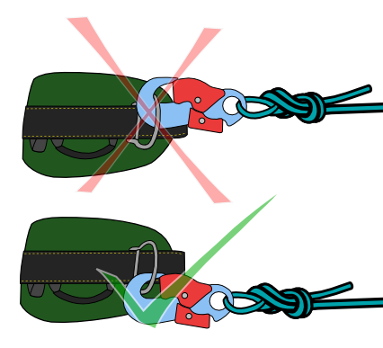
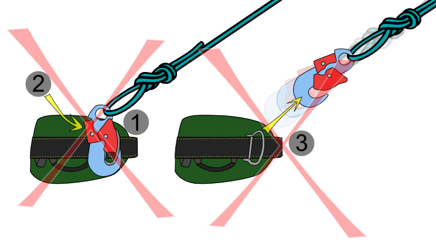
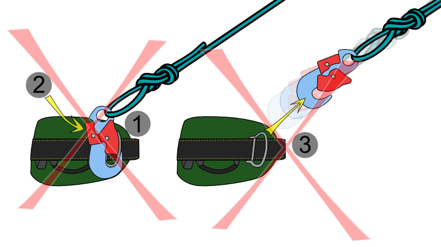

Why use locking carabiners?
Carabiners fundamentally connect two or more items. Locking carabiners provide additional security, but security for what purpose?
1. Retain the connected items
Things that are supposed to be connected remain connected. The obvious answer - attached things cannot slip out of an open gate.
2. Maximize strength
A closed gate maximizes the strength of loaded carabiner. Three ways a gate may open unintentionally:
Foreign Objects
Foreign objects such as tree branches, rocks or other equipment may push the gate open, reducing strength under load.
Gate Lash
In an abrupt stop the carabiner gate retains enough momentum to momentarily open. During this moment, the load exerted on the carabiner only needs to exceed the gate-open strength for the carabiner to fail. Most commonly this occurs during a hard fall as a carabiner spine slams against an object such as the rock face.
This gate lash (also known as gate shutter) phenomenon is unlikely to break a carabiner even in lead rock climbing, where hard falls are more commonplace (in part because carabiner companies design for gate-open strengths). Carabiner designs with lightweight gates (such as wiregate carabiners) experience smaller magnitude and duration gate lash under similar conditions as carabiners with heavier (solid) gates.
Gate Flutter
Harmonic vibrations created by rope running through a carabiner may induce gate flutter, causing the gate to slightly open and close momentarily (and rapidly). Again, the most likely scenario for gate flutter is during a hard (long) rock climbing fall on dynamic rope, and low-mass gates such as wiregate carabiner seem less succeptable to this phenomenon
3. Prevent accidental connections
Things not connected to the carabiner should remain unconnected.
Foreign Objects
If a stationary item such as a tree branch, fixed rope or cable presses against the carabiner gate, it may become clipped on accident - placing the climber in a predicement where they cannot advance or retreat without disconnecting the foreign object or disconnecting themselves from the now-stationary carabiner.
Double Clips
But another danger is that the same item is clipped a second time, typically by a rigid item pressing against carabiner gate then sliding off the gate itself, or a flexible good such as a rope being drawn against the gate under tension.
Either way, an accidental roll-out is incredibly dangerous and most common when attaching carabiners to other rigid hardware. This is one reason modern ANSI z359 compliant connectors feature a rated gate-face strength of 16kN, since work-at-height procedures often involve hardware-to-hardware connections.
Strength
For the most part, climbing gear is strong enough. It is strong enough to never break when used properly, and strong enough to almost never break under most cases of improper use. The weak point of the system is the bipedal sack of saline or their error prone brain. Your decision making or processes will fail before the equipment in almost every case.
That said, to better understand how industry standards and regulations have changed around carabiners over the years, I think it is interesting to look at two aspects of strength ratings - one adopted many years ago, and one more recently: 3 Sigma Testing and ANSI Gate Ratings
3-Sigma (3σ) Testing
When companies first started putting strength ratings on carabiners and related connectors, there was no set-standard on how to determine a singular number to represent that strength.
One approach might be to pull test a sample of carabiners to their limit, then use the average of their breaking point as the stated strength rating. However, this rating would be skewed by any outlying carabiners which break far above or below the average.
And even if the carabiners strengths are evenly distributed around the average, half break below the strength rating.
And it's unclear how far below the rating they would break.
A more refined method would provide a breaking strength at which almost all carabiners would meet or exceed, and those that don't would likely be only slightly below this number. Climbing companies (and the UIAA) has settled on using a method which takes into account the average breaking strength as well as the deviation from that average amongst a set of tested carabiners.
This method is known as 3-Sigma testing, and essentially means that 99.87% of modern standards compliant climbing carabiners will fail at or above their rated strength.
Here are a few ways various companies describe 3σ Testing:
ANSI z359 Gate Ratings
In short, the American National Standards Institute (ANSI) defines a process for an industry to develop voluntary standards, but regulatory bodies in the US (such as OSHA) commonly adopt or require compliance with these standards.
Starting with the ANSI Z359.1-2007 (Fall Protection Code), connectors were required to meet new additional minimum breaking strengths. In addition to the long standing minimum 5000 lbf (22.2 kN) major axis strength, snap hooks and carabiners needed to withstand 16kN (3600 lbf) against the gate face (gate-in pressure), when side-loaded and along the minor axis (gate-out pressure). Connectors which meet this standard will bear related markings on the gate and body of the connector.
This 16kN minimum strength greatly exceeded common requirements for gate strength found in existing industrial and climbing standards. As such, the past 15 years has seen a massive increase in the number of connectors with ANSI compliant gates.
In recreational use, these over-built connectors are unnecessary given proper rigging, applications and avoiding connecting hardware to hardware.
In the workplace, it is far more common to have un-attended connectors, connectors clipped to other rigid hardware such as metal D-rings on harnesses, or fall-arrest points on structures. With these occupational fall protection systems, the increased connector strength can prevent accidents such as connector roll-out, see below:
Clipping a Side-D
Incorrect method of connecting to side-D rings
Correct method of connecting to side-D rings

Rollout from Incorrect Connection
1. Connector twists, placing pressure on gate.
2. Gate breaks or accidental pressure is applied to lock
3. Connector rolls out by double-clips the D-ring, becoming unclipped

Incorrect method of connecting to side-D rings
Correct method of connecting to side-D rings
Rollout from Incorrect Connection
1. Connector twists, placing pressure on gate.
2. Gate breaks or accidental pressure is applied to lock
3. Connector rolls out by double-clips the D-ring, becoming unclipped

1. Connector twists, placing pressure on gate.
2. Gate breaks or accidental pressure is applied to lock
3. Connector rolls out by double-clips the D-ring, becoming unclipped